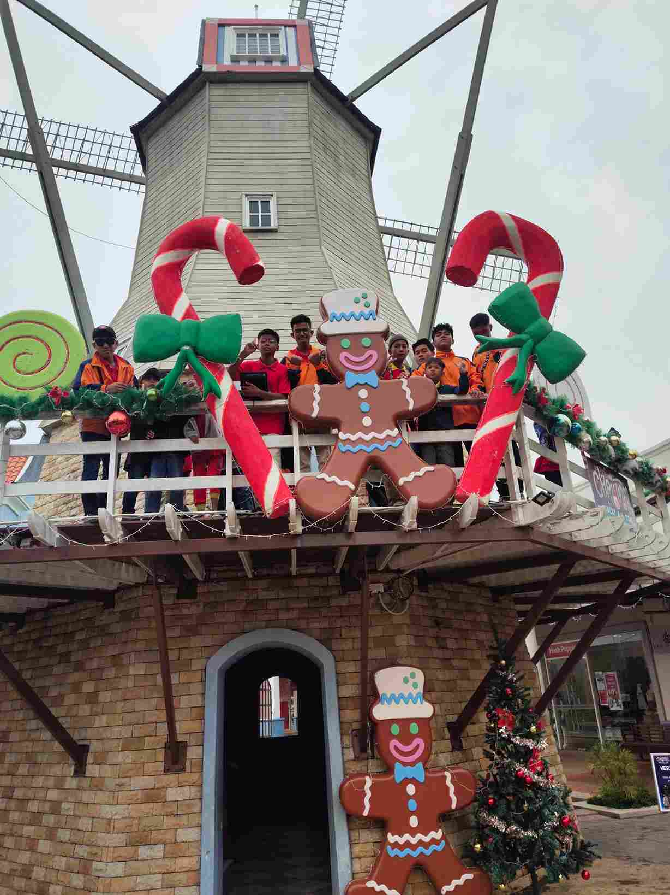

SCHEDULE
Daily Activities : Monday, Tuesday and Wednesday
5:30 a.m. : Wake Up, Clean Yourself, Morning Prayer
6.30 a.m. : Breakfast
7.00 a.m. : Go to Primary, Religious & Secondary Schools - Morning Session Clean Dormitory/Area/Dining Hall - Evening Session Students
8.30 a.m. : Morning Prep in Class - Evening Session Students
10.30 a.m. : Religious School Children Getting ready for school
Lunch : Evening Session Students
12.00 p.m. : Go to School - Evening Session Students
1.30 p.m. : Lunch / Zohor Prayer - Morning Session Students Year 4, 5, 6 students to KAFA Religion Class
3.00 p.m. : Evening Prep - Morning Session Students
4.30 p.m : Asar Prayer, Afternoon Drink
5.00 p.m. : Sports / Leisure / Aerobics
6.30 p.m. : Dinner & Maghrib Prayer in Congregation
8.00 p.m. : Night Prep in Class Tuition Class Year 5,6 Form 2,3,4 & 5
9.30 p.m. : Congregational Isyak Prayer & Night Drink
11.00 p.m. : Sleep / Lights off
Daily Activities : Thursday and Friday
5.30 a.m. : Wake up from sleep Clean Yourself. Morning prayers
6.30 a.m. : Breakfast
7.00 a.m. : Go To Elementary School, Religion. & Secondary - Morning Session Clean the Dormitory
8.30 a.m. : Morning Prep In Class - Evening Session Students. Ting 2 - Tuition (Friday)
10.30 a.m. : Back From Religious School Children
Getting ready for school
Lunch : Evening Session Students
12.30 p.m. : Go To School - Evening Session Students
Lunch : Morning Session Students Zohor Prayer (Thursday) / Friday Prayer (Friday)
3.00 p.m. : Evening Prep In Class - Morning Session Students Year 4, 5, 6 students to KAFA Religion Class
Tuition Class Form 3,4 & 5 (Friday Only)
4.30 p.m. : Afternoon Prayer, Afternoon Drink
5.00 p.m. : Sports / Leisure / Aerobics
6.30 p.m. : Dinner (If there are guests dinner will be made after Isyak prayer for Thursday) Congregational Maghrib Prayer
Reading Yassin, Tahlil & Doa Selamat (Thursday)
8.00 p.m. : Prep Class For Elementary School (If There Is Schoolwork) Religious Classes - Fridays Only
8.45 p.m. : Religious Classes at the Surau - Thursdays Only
10.00 p.m. : Night Drink & Congregational Isyak Prayer
11.00 p.m. : Sleep / Lights Off
Daily Activities : Saturday & Sunday
5.30 a.m. : Wake up from sleep, Clean yourself, Morning Prayer
6.30 a.m. : Breakfast / Clean Dormitory
7.00 a.m. : Morning Exercise / Leisure / Sports / Gathering
8.00 a.m. : Agricultural Activities (Saturday Only) / Silat (Sunday Only)
10.00 a.m. : Library & Computer Activities - Saturday Only
Additional : Classes at School - Subject to the School Schedule
1.00 p.m. : Lunch & Zohor Prayer in Congregation
2.00 p.m. : Free Activities / Watching T.V. - Sundays Only
3.30 p.m. : Religious Classes (All Residents) - Saturdays Only Year 5 & 6 Tuition Class (Saturday Only)
Free Activities : Sunday
5.00 p.m. : Afternoon Prayer, Afternoon Drink
5.30 p.m. : Sports / Leisure
6.45 p.m. : Dinner, Maghrib Prayer
8.00 p.m. : Religious Classes (All Residents) - Sundays Only
10.00 p.m. : Congregational Isyak Prayer & Night Drink
11.00 p.m. : Sleep / Lights Off
Free Activity / Watching TV - Saturday
Outing : Once a Month
Weekly Activities
Reading Yaasin and Tahlil (every Thursday, Friday night after Maghrib Prayer)
Religious Classes (on Friday, Saturday and Sunday.)
Agricultural and landscape activities (held every Saturday 8.00 - 9.00 am)
Computer Class and Library Activities (on Saturdays 10.00 am - 1.00 pm)
Party invitations
Watching television (Astro Broadcast)
Picture of The Activities

|
READING SIDE
ما نَقَصَتْ صَدَقَةٌ مِن مالٍ، وما زادَ اللَّهُ عَبْدًا بعَفْوٍ، إلَّا عِزًّا
The meaning: “There will be no decrease in property with charity. And a servant who forgives will surely increase glory for him.”
والصدقة تطفىء الخطيئة كما تطفىء الماء النار
“Charity can erase sins like water extinguishes fire.”
Hadith Narrated by At-Tirmidhi, 614
"The best home among Muslims is a home where there are orphans who are treated well. And the worst house among the Muslims is the house where there is an orphan and he is treated badly." (Hadith Narrated by Ibnu Majah)
DONATE NOW
|